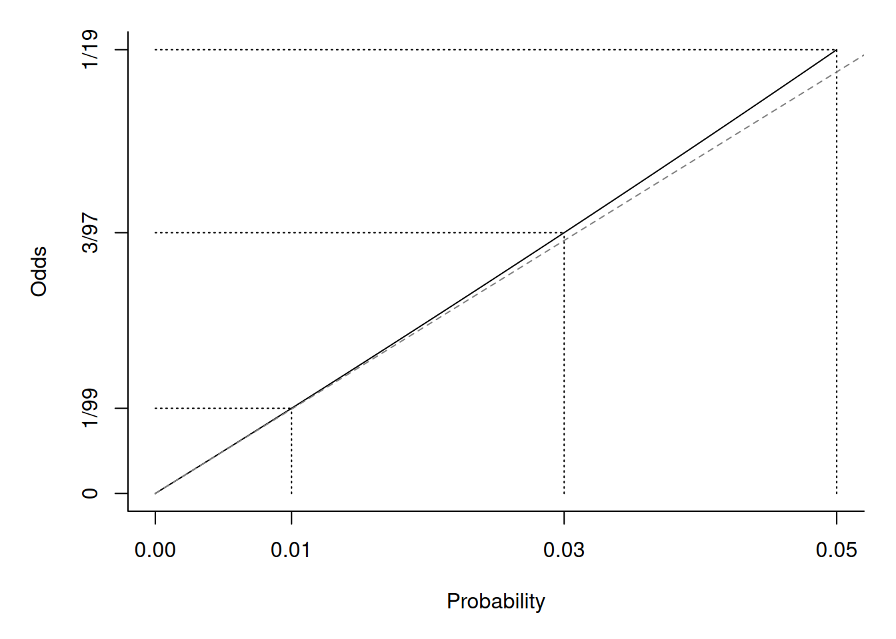
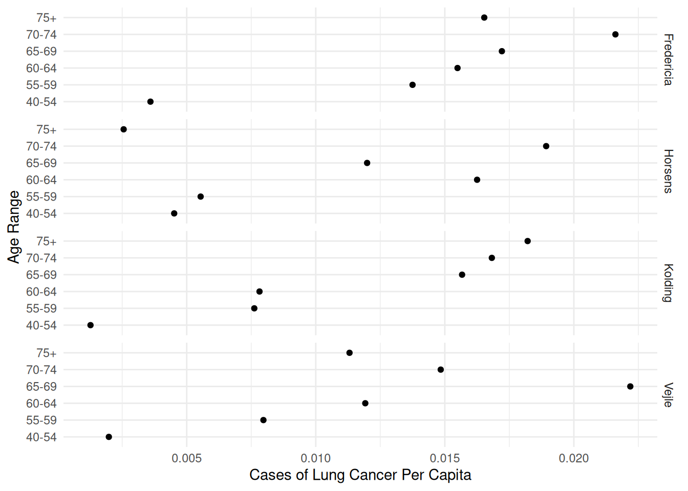
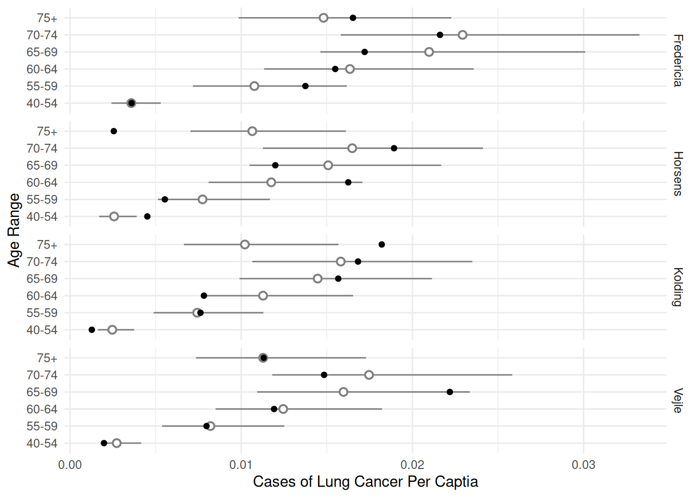
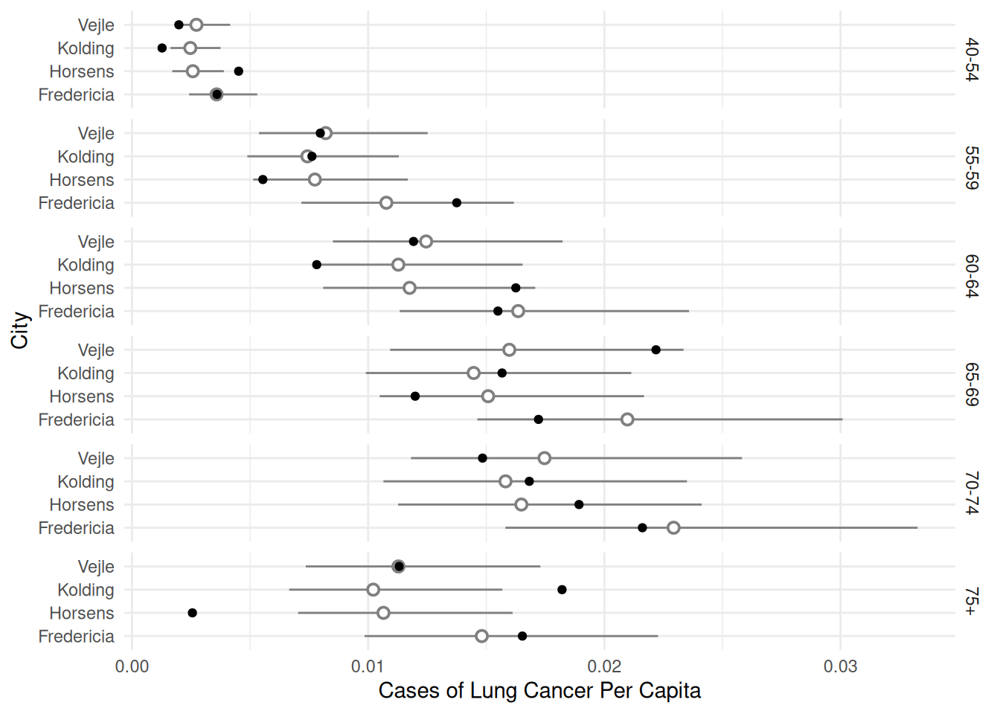
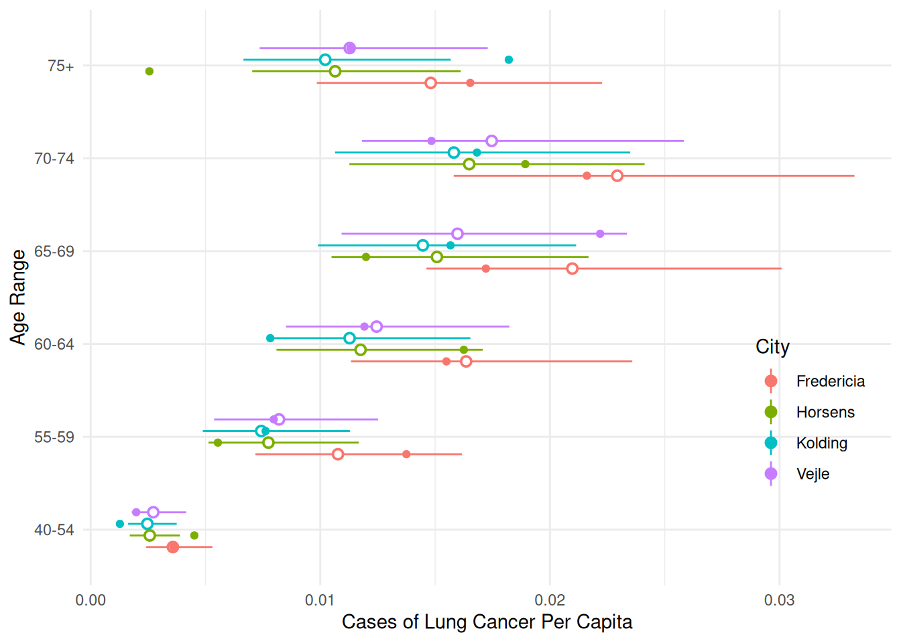
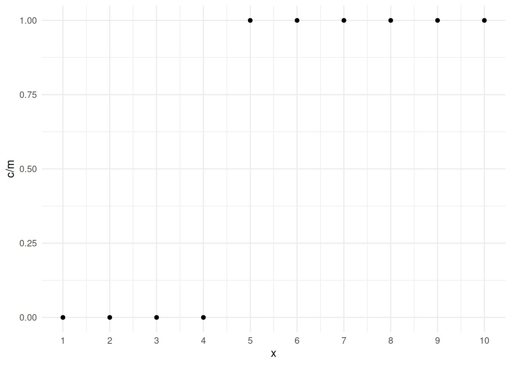
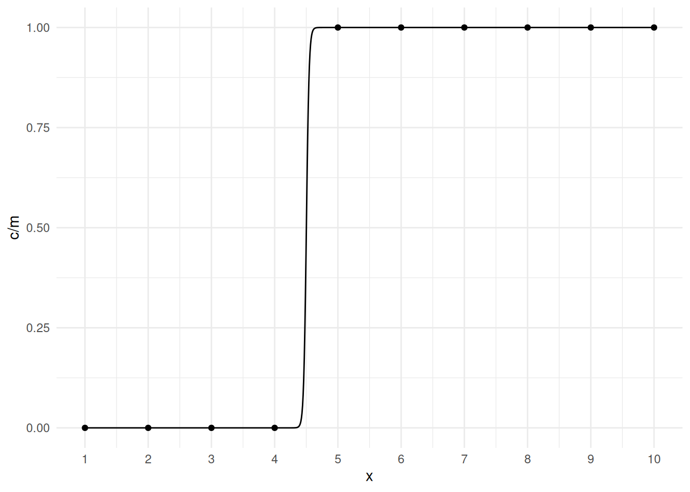
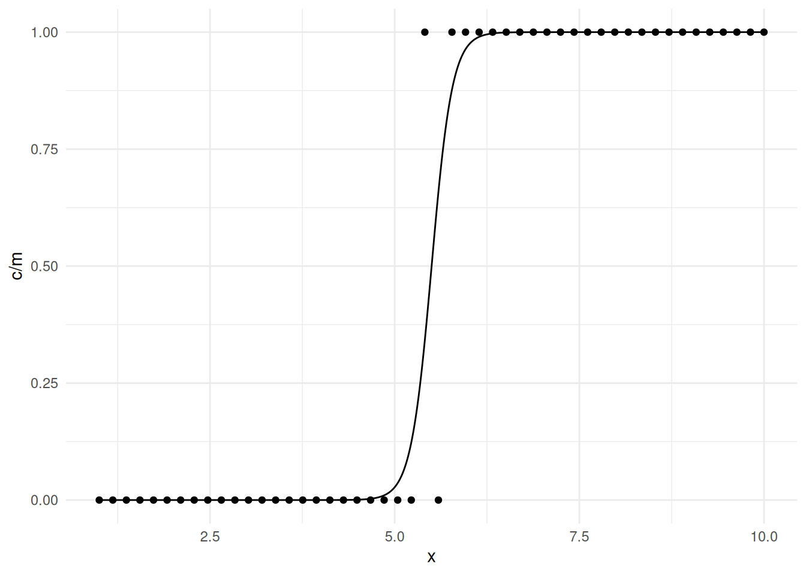

You can also download a PDF copy of this lecture.
The emmeans package can be used to produce many of
the same inferences that are obtained using contrast with
respect to estimated expected rates/probabilities as well as rate/odds
ratios.
Example: Consider the following Poisson regression
model for the ceriodaphniastrain data. I have renamed
concentration and the categories of strain to
make the example clearer.
library(dplyr)
waterfleas <- trtools::ceriodaphniastrain |>
mutate(strain = factor(strain, levels = c(1,2), labels = c("a","b"))) |>
rename(conc = concentration)
m <- glm(count ~ conc * strain, family = poisson, data = waterfleas)
summary(m)$coefficients Estimate Std. Error z value Pr(>|z|)
(Intercept) 4.481 0.0435 103.01 0.00e+00
conc -1.598 0.0624 -25.59 1.86e-144
strainb -0.337 0.0670 -5.02 5.11e-07
conc:strainb 0.125 0.0939 1.34 1.82e-01We can compute the expected count for a concentration of two for each
strain using contrast.
trtools::contrast(m, tf = exp,
a = list(strain = c("a","b"), conc = 2)) estimate lower upper
3.62 2.97 4.40
3.32 2.67 4.12And we can do it using emmeans if we specify
type = "response" and use the at argument to
specify the value of any quantitative explanatory variables.
library(emmeans)
emmeans(m, ~ strain, type = "response", at = list(conc = 2)) strain rate SE df asymp.LCL asymp.UCL
a 3.62 0.363 Inf 2.97 4.40
b 3.32 0.367 Inf 2.67 4.12
Confidence level used: 0.95
Intervals are back-transformed from the log scale emmeans(m, ~ strain|conc, type = "response", at = list(conc = c(1,2,3)))conc = 1:
strain rate SE df asymp.LCL asymp.UCL
a 17.87 0.815 Inf 16.34 19.54
b 14.47 0.725 Inf 13.11 15.96
conc = 2:
strain rate SE df asymp.LCL asymp.UCL
a 3.62 0.363 Inf 2.97 4.40
b 3.32 0.367 Inf 2.67 4.12
conc = 3:
strain rate SE df asymp.LCL asymp.UCL
a 0.73 0.118 Inf 0.53 1.00
b 0.76 0.136 Inf 0.54 1.08
Confidence level used: 0.95
Intervals are back-transformed from the log scale emmeans(m, ~ conc|strain, type = "response", at = list(conc = c(1,2,3)))strain = a:
conc rate SE df asymp.LCL asymp.UCL
1 17.87 0.815 Inf 16.34 19.54
2 3.62 0.363 Inf 2.97 4.40
3 0.73 0.118 Inf 0.53 1.00
strain = b:
conc rate SE df asymp.LCL asymp.UCL
1 14.47 0.725 Inf 13.11 15.96
2 3.32 0.367 Inf 2.67 4.12
3 0.76 0.136 Inf 0.54 1.08
Confidence level used: 0.95
Intervals are back-transformed from the log scale emmeans(m, ~ conc*strain, type = "response", at = list(conc = c(1,2,3))) conc strain rate SE df asymp.LCL asymp.UCL
1 a 17.87 0.815 Inf 16.34 19.54
2 a 3.62 0.363 Inf 2.97 4.40
3 a 0.73 0.118 Inf 0.53 1.00
1 b 14.47 0.725 Inf 13.11 15.96
2 b 3.32 0.367 Inf 2.67 4.12
3 b 0.76 0.136 Inf 0.54 1.08
Confidence level used: 0.95
Intervals are back-transformed from the log scale Note that emmeans does produce a valid standard error on
the scale of the expected count/rate which
trtools::contrast does not (by default), and that
trtools::contrast will show the test statistic and p-value
on the log scale if we omit the tf = exp argument.
We can compute the rate ratio to compare the two strains at a given concentration.
trtools::contrast(m, tf = exp,
a = list(strain = "a", conc = 2),
b = list(strain = "b", conc = 2)) estimate lower upper
1.09 0.813 1.46pairs(emmeans(m, ~ strain, type = "response",
at = list(conc = 2)), infer = TRUE) contrast ratio SE df asymp.LCL asymp.UCL null z.ratio p.value
a / b 1.09 0.163 Inf 0.813 1.46 1 0.576 0.5650
Confidence level used: 0.95
Intervals are back-transformed from the log scale
Tests are performed on the log scale pairs(emmeans(m, ~ strain|conc, type = "response",
at = list(conc = c(1,2,3))), infer = TRUE)conc = 1:
contrast ratio SE df asymp.LCL asymp.UCL null z.ratio p.value
a / b 1.235 0.0837 Inf 1.082 1.41 1 3.118 0.0020
conc = 2:
contrast ratio SE df asymp.LCL asymp.UCL null z.ratio p.value
a / b 1.090 0.1630 Inf 0.813 1.46 1 0.576 0.5650
conc = 3:
contrast ratio SE df asymp.LCL asymp.UCL null z.ratio p.value
a / b 0.961 0.2310 Inf 0.601 1.54 1 -0.164 0.8700
Confidence level used: 0.95
Intervals are back-transformed from the log scale
Tests are performed on the log scale Note that you can use reverse = TRUE to “flip” a rate
(or odds) ratio.
pairs(emmeans(m, ~ strain|conc, type = "response",
at = list(conc = c(1,2,3))), infer = TRUE, reverse = TRUE)conc = 1:
contrast ratio SE df asymp.LCL asymp.UCL null z.ratio p.value
b / a 0.810 0.0549 Inf 0.709 0.925 1 -3.118 0.0020
conc = 2:
contrast ratio SE df asymp.LCL asymp.UCL null z.ratio p.value
b / a 0.918 0.1370 Inf 0.685 1.230 1 -0.576 0.5650
conc = 3:
contrast ratio SE df asymp.LCL asymp.UCL null z.ratio p.value
b / a 1.040 0.2500 Inf 0.650 1.665 1 0.164 0.8700
Confidence level used: 0.95
Intervals are back-transformed from the log scale
Tests are performed on the log scale If we apply pairs when using * we will get
all possible pairwise comparisons.
pairs(emmeans(m, ~ strain*conc, type = "response",
at = list(conc = c(1,2,3))), infer = TRUE) contrast ratio SE df asymp.LCL asymp.UCL null z.ratio p.value
a conc1 / b conc1 1.24 0.08 Inf 1.02 1.5 1 3.120 0.0220
a conc1 / a conc2 4.94 0.31 Inf 4.14 5.9 1 25.590 <.0001
a conc1 / b conc2 5.39 0.64 Inf 3.83 7.6 1 14.070 <.0001
a conc1 / a conc3 24.43 3.05 Inf 17.11 34.9 1 25.590 <.0001
a conc1 / b conc3 23.49 4.32 Inf 13.90 39.7 1 17.150 <.0001
b conc1 / a conc2 4.00 0.45 Inf 2.91 5.5 1 12.360 <.0001
b conc1 / b conc2 4.36 0.31 Inf 3.57 5.3 1 21.010 <.0001
b conc1 / a conc3 19.77 3.33 Inf 12.24 32.0 1 17.720 <.0001
b conc1 / b conc3 19.01 2.66 Inf 12.75 28.3 1 21.010 <.0001
a conc2 / b conc2 1.09 0.16 Inf 0.71 1.7 1 0.580 0.9930
a conc2 / a conc3 4.94 0.31 Inf 4.14 5.9 1 25.590 <.0001
a conc2 / b conc3 4.75 0.97 Inf 2.65 8.5 1 7.620 <.0001
b conc2 / a conc3 4.54 0.89 Inf 2.60 7.9 1 7.750 <.0001
b conc2 / b conc3 4.36 0.31 Inf 3.57 5.3 1 21.010 <.0001
a conc3 / b conc3 0.96 0.23 Inf 0.49 1.9 1 -0.160 1.0000
Confidence level used: 0.95
Conf-level adjustment: tukey method for comparing a family of 6 estimates
Intervals are back-transformed from the log scale
P value adjustment: tukey method for comparing a family of 6 estimates
Tests are performed on the log scale To force pairs to only do pairwise comparisons within
each value of concentration use by = "concentration".
pairs(emmeans(m, ~ strain*conc, type = "response",
at = list(conc = c(1,2,3))), by = "conc", infer = TRUE)conc = 1:
contrast ratio SE df asymp.LCL asymp.UCL null z.ratio p.value
a / b 1.235 0.0837 Inf 1.082 1.41 1 3.118 0.0020
conc = 2:
contrast ratio SE df asymp.LCL asymp.UCL null z.ratio p.value
a / b 1.090 0.1630 Inf 0.813 1.46 1 0.576 0.5650
conc = 3:
contrast ratio SE df asymp.LCL asymp.UCL null z.ratio p.value
a / b 0.961 0.2310 Inf 0.601 1.54 1 -0.164 0.8700
Confidence level used: 0.95
Intervals are back-transformed from the log scale
Tests are performed on the log scale Or alternatively use ~ strain|concentration in the
emmeans function.
What about the rate ratio for the effect of concentration?
trtools::contrast(m, tf = exp,
a = list(strain = c("a","b"), conc = 2),
b = list(strain = c("a","b"), conc = 1)) estimate lower upper
0.202 0.179 0.229
0.229 0.200 0.263emmeans(m, ~conc|strain,
at = list(conc = c(2,1)), type = "response")strain = a:
conc rate SE df asymp.LCL asymp.UCL
2 3.62 0.363 Inf 2.97 4.40
1 17.87 0.815 Inf 16.34 19.54
strain = b:
conc rate SE df asymp.LCL asymp.UCL
2 3.32 0.367 Inf 2.67 4.12
1 14.47 0.725 Inf 13.11 15.96
Confidence level used: 0.95
Intervals are back-transformed from the log scale pairs(emmeans(m, ~conc|strain,
at = list(conc = c(2,1)), type = "response"), infer = TRUE)strain = a:
contrast ratio SE df asymp.LCL asymp.UCL null z.ratio p.value
conc2 / conc1 0.202 0.0126 Inf 0.179 0.229 1 -25.590 <.0001
strain = b:
contrast ratio SE df asymp.LCL asymp.UCL null z.ratio p.value
conc2 / conc1 0.229 0.0161 Inf 0.200 0.263 1 -21.010 <.0001
Confidence level used: 0.95
Intervals are back-transformed from the log scale
Tests are performed on the log scale pairs(emmeans(m, ~conc*strain,
at = list(conc = c(2,1)), type = "response"), infer = TRUE, by = "strain")strain = a:
contrast ratio SE df asymp.LCL asymp.UCL null z.ratio p.value
conc2 / conc1 0.202 0.0126 Inf 0.179 0.229 1 -25.590 <.0001
strain = b:
contrast ratio SE df asymp.LCL asymp.UCL null z.ratio p.value
conc2 / conc1 0.229 0.0161 Inf 0.200 0.263 1 -21.010 <.0001
Confidence level used: 0.95
Intervals are back-transformed from the log scale
Tests are performed on the log scale What if we want to know if the rate ratios are significantly different? There are a couple of ways to do this. We can compare the odds ratios for the effect of concentration.
pairs(pairs(emmeans(m, ~conc|strain,
at = list(conc = c(2,1)), type = "response")), by = NULL) contrast ratio SE df null z.ratio p.value
(conc2 / conc1 a) / (conc2 / conc1 b) 0.882 0.0828 Inf 1 -1.336 0.1817
Tests are performed on the log scale You can also use emtrends, which is simpler, but limited
to a one-unit increase in the quantitative variable.
emtrends(m, ~strain, var = "conc") strain conc.trend SE df asymp.LCL asymp.UCL
a -1.60 0.0624 Inf -1.72 -1.48
b -1.47 0.0701 Inf -1.61 -1.33
Confidence level used: 0.95 pairs(emtrends(m, ~strain, var = "conc")) contrast estimate SE df z.ratio p.value
a - b -0.125 0.0939 Inf -1.336 0.1817Note that these are essentially slopes but for the log of the expected response. But the tests are the same.
Suppose there was a third explanatory variable, say two types of chemicals.
set.seed(123)
waterfleas <- waterfleas |>
mutate(chemical = sample(c("chem1","chem2"), n(), replace = TRUE))
m <- glm(count ~ conc * strain * chemical, family = poisson, data = waterfleas)
summary(m)$coefficients Estimate Std. Error z value Pr(>|z|)
(Intercept) 4.4747 0.0510 87.7927 0.00e+00
conc -1.5860 0.0729 -21.7686 4.60e-105
strainb -0.2949 0.0900 -3.2778 1.05e-03
chemicalchem2 0.0269 0.0989 0.2720 7.86e-01
conc:strainb 0.1182 0.1198 0.9862 3.24e-01
conc:chemicalchem2 -0.0464 0.1427 -0.3249 7.45e-01
strainb:chemicalchem2 -0.0919 0.1422 -0.6467 5.18e-01
conc:strainb:chemicalchem2 0.0118 0.2017 0.0584 9.53e-01emmeans(m, ~conc|strain*chemical,
at = list(conc = c(2,1)), type = "response")strain = a, chemical = chem1:
conc rate SE df asymp.LCL asymp.UCL
2 3.68 0.440 Inf 2.91 4.65
1 17.97 1.010 Inf 16.10 20.05
strain = b, chemical = chem1:
conc rate SE df asymp.LCL asymp.UCL
2 3.47 0.500 Inf 2.62 4.60
1 15.06 0.962 Inf 13.29 17.07
strain = a, chemical = chem2:
conc rate SE df asymp.LCL asymp.UCL
2 3.44 0.651 Inf 2.38 4.99
1 17.62 1.410 Inf 15.07 20.61
strain = b, chemical = chem2:
conc rate SE df asymp.LCL asymp.UCL
2 3.03 0.532 Inf 2.15 4.28
1 13.63 1.100 Inf 11.63 15.98
Confidence level used: 0.95
Intervals are back-transformed from the log scale pairs(emmeans(m, ~conc|strain*chemical,
at = list(conc = c(2,1)), type = "response"), infer = TRUE)strain = a, chemical = chem1:
contrast ratio SE df asymp.LCL asymp.UCL null z.ratio p.value
conc2 / conc1 0.205 0.0149 Inf 0.177 0.236 1 -21.770 <.0001
strain = b, chemical = chem1:
contrast ratio SE df asymp.LCL asymp.UCL null z.ratio p.value
conc2 / conc1 0.230 0.0219 Inf 0.191 0.278 1 -15.420 <.0001
strain = a, chemical = chem2:
contrast ratio SE df asymp.LCL asymp.UCL null z.ratio p.value
conc2 / conc1 0.196 0.0240 Inf 0.154 0.249 1 -13.300 <.0001
strain = b, chemical = chem2:
contrast ratio SE df asymp.LCL asymp.UCL null z.ratio p.value
conc2 / conc1 0.223 0.0236 Inf 0.181 0.274 1 -14.160 <.0001
Confidence level used: 0.95
Intervals are back-transformed from the log scale
Tests are performed on the log scale Example: Consider the following logistic regression
model for the insecticide data.
m <- glm(cbind(deaths, total-deaths) ~ insecticide * deposit,
family = binomial, data = trtools::insecticide)
summary(m)$coefficients Estimate Std. Error z value Pr(>|z|)
(Intercept) -2.8109 0.3585 -7.8418 4.44e-15
insecticideboth 1.2258 0.6718 1.8247 6.80e-02
insecticideDDT -0.0389 0.5072 -0.0768 9.39e-01
deposit 0.6221 0.0779 7.9899 1.35e-15
insecticideboth:deposit 0.3701 0.2090 1.7711 7.65e-02
insecticideDDT:deposit -0.1414 0.1038 -1.3630 1.73e-01We can use trtools::contrast or emmeans to
produce estimates of the probability of death for a given insecticide at
a given deposit value.
trtools::contrast(m, tf = plogis,
a = list(insecticide = c("g-BHC","both","DDT"), deposit = 5),
cnames = c("g-BHC","both","DDT")) estimate lower upper
g-BHC 0.574 0.503 0.643
both 0.967 0.921 0.987
DDT 0.390 0.329 0.455emmeans(m, ~ insecticide, type = "response", at = list(deposit = 5)) insecticide prob SE df asymp.LCL asymp.UCL
g-BHC 0.574 0.0360 Inf 0.503 0.643
both 0.967 0.0150 Inf 0.921 0.987
DDT 0.390 0.0323 Inf 0.329 0.455
Confidence level used: 0.95
Intervals are back-transformed from the logit scale Again, emmeans produces a valid standard error on the
probability scale while trtools::contrast does not, and
trtools::contrast will produce test statistics and p-values
on the logit scale when the tf = plogis argument is
omitted.
We can compute odds ratios to compare the insecticides at a given deposit.
pairs(emmeans(m, ~ insecticide, type = "response",
at = list(deposit = 5)), adjust = "none", infer = TRUE) contrast odds.ratio SE df asymp.LCL asymp.UCL null z.ratio p.value
(g-BHC) / both 0.0 0.02 Inf 0.02 0.1 1 -6.270 <.0001
(g-BHC) / DDT 2.1 0.42 Inf 1.42 3.1 1 3.720 0.0002
both / DDT 45.7 22.30 Inf 17.60 118.7 1 7.850 <.0001
Confidence level used: 0.95
Intervals are back-transformed from the log odds ratio scale
Tests are performed on the log odds ratio scale trtools::contrast(m, tf = exp,
a = list(insecticide = c("g-BHC","g-BHC","both"), deposit = 5),
b = list(insecticide = c("both","DDT","DDT"), deposit = 5),
cnames = c("g-BHC / both", "g-BHC / DDT", "both / DDT")) estimate lower upper
g-BHC / both 0.0461 0.0176 0.121
g-BHC / DDT 2.1087 1.4239 3.123
both / DDT 45.7110 17.5995 118.724We can flip/reverse the odds ratios if desired (which can also be done with rate ratios).
pairs(emmeans(m, ~ insecticide, type = "response",
at = list(deposit = 5)), adjust = "none", reverse = TRUE, infer = TRUE) contrast odds.ratio SE df asymp.LCL asymp.UCL null z.ratio p.value
both / (g-BHC) 21.68 10.60 Inf 8.29 56.7 1 6.270 <.0001
DDT / (g-BHC) 0.47 0.10 Inf 0.32 0.7 1 -3.720 0.0002
DDT / both 0.02 0.01 Inf 0.01 0.1 1 -7.850 <.0001
Confidence level used: 0.95
Intervals are back-transformed from the log odds ratio scale
Tests are performed on the log odds ratio scale trtools::contrast(m, tf = exp,
a = list(insecticide = c("both","DDT","DDT"), deposit = 5),
b = list(insecticide = c("g-BHC","g-BHC","both"), deposit = 5),
cnames = c("both / g-BHC", "DDT / g-BHC", "DDT / both")) estimate lower upper
both / g-BHC 21.6772 8.29252 56.6658
DDT / g-BHC 0.4742 0.32021 0.7023
DDT / both 0.0219 0.00842 0.0568We can estimate the odds ratios at several values of deposit.
pairs(emmeans(m, ~ insecticide|deposit, type = "response",
at = list(deposit = c(4,5,6))), adjust = "none", infer = TRUE)deposit = 4:
contrast odds.ratio SE df asymp.LCL asymp.UCL null z.ratio p.value
(g-BHC) / both 0.1 0.0 Inf 0.04 0.1 1 -8.240 <.0001
(g-BHC) / DDT 1.8 0.4 Inf 1.23 2.7 1 3.000 0.0027
both / DDT 27.4 9.1 Inf 14.27 52.6 1 9.950 <.0001
deposit = 5:
contrast odds.ratio SE df asymp.LCL asymp.UCL null z.ratio p.value
(g-BHC) / both 0.0 0.0 Inf 0.02 0.1 1 -6.270 <.0001
(g-BHC) / DDT 2.1 0.4 Inf 1.42 3.1 1 3.720 0.0002
both / DDT 45.7 22.3 Inf 17.60 118.7 1 7.850 <.0001
deposit = 6:
contrast odds.ratio SE df asymp.LCL asymp.UCL null z.ratio p.value
(g-BHC) / both 0.0 0.0 Inf 0.01 0.1 1 -5.080 <.0001
(g-BHC) / DDT 2.4 0.6 Inf 1.50 3.9 1 3.580 0.0003
both / DDT 76.2 51.0 Inf 20.53 283.1 1 6.470 <.0001
Confidence level used: 0.95
Intervals are back-transformed from the log odds ratio scale
Tests are performed on the log odds ratio scale pairs(emmeans(m, ~ insecticide*deposit, type = "response",
at = list(deposit = c(4,5,6))), by = "deposit", adjust = "none", infer = TRUE)deposit = 4:
contrast odds.ratio SE df asymp.LCL asymp.UCL null z.ratio p.value
(g-BHC) / both 0.1 0.0 Inf 0.04 0.1 1 -8.240 <.0001
(g-BHC) / DDT 1.8 0.4 Inf 1.23 2.7 1 3.000 0.0027
both / DDT 27.4 9.1 Inf 14.27 52.6 1 9.950 <.0001
deposit = 5:
contrast odds.ratio SE df asymp.LCL asymp.UCL null z.ratio p.value
(g-BHC) / both 0.0 0.0 Inf 0.02 0.1 1 -6.270 <.0001
(g-BHC) / DDT 2.1 0.4 Inf 1.42 3.1 1 3.720 0.0002
both / DDT 45.7 22.3 Inf 17.60 118.7 1 7.850 <.0001
deposit = 6:
contrast odds.ratio SE df asymp.LCL asymp.UCL null z.ratio p.value
(g-BHC) / both 0.0 0.0 Inf 0.01 0.1 1 -5.080 <.0001
(g-BHC) / DDT 2.4 0.6 Inf 1.50 3.9 1 3.580 0.0003
both / DDT 76.2 51.0 Inf 20.53 283.1 1 6.470 <.0001
Confidence level used: 0.95
Intervals are back-transformed from the log odds ratio scale
Tests are performed on the log odds ratio scale Here is how we can estimate the odds ratios for the effect of deposit.
emmeans(m, ~deposit|insecticide, at = list(deposit = c(2,1)), type = "response") # probabilityinsecticide = g-BHC:
deposit prob SE df asymp.LCL asymp.UCL
2 0.173 0.0318 Inf 0.119 0.244
1 0.101 0.0261 Inf 0.060 0.165
insecticide = both:
deposit prob SE df asymp.LCL asymp.UCL
2 0.598 0.0566 Inf 0.484 0.703
1 0.356 0.0892 Inf 0.205 0.542
insecticide = DDT:
deposit prob SE df asymp.LCL asymp.UCL
2 0.131 0.0271 Inf 0.087 0.194
1 0.086 0.0232 Inf 0.050 0.143
Confidence level used: 0.95
Intervals are back-transformed from the logit scale pairs(emmeans(m, ~deposit|insecticide, at = list(deposit = c(2,1)),
type = "response"), infer = TRUE) # odds ratiosinsecticide = g-BHC:
contrast odds.ratio SE df asymp.LCL asymp.UCL null z.ratio p.value
deposit2 / deposit1 1.86 0.145 Inf 1.60 2.17 1 7.990 <.0001
insecticide = both:
contrast odds.ratio SE df asymp.LCL asymp.UCL null z.ratio p.value
deposit2 / deposit1 2.70 0.523 Inf 1.84 3.94 1 5.120 <.0001
insecticide = DDT:
contrast odds.ratio SE df asymp.LCL asymp.UCL null z.ratio p.value
deposit2 / deposit1 1.62 0.111 Inf 1.41 1.85 1 7.010 <.0001
Confidence level used: 0.95
Intervals are back-transformed from the log odds ratio scale
Tests are performed on the log odds ratio scale We can also compare the odds ratios.
pairs(pairs(emmeans(m, ~deposit|insecticide, at = list(deposit = c(2,1)))), by = NULL) contrast estimate SE df z.ratio p.value
(deposit2 - deposit1 g-BHC) - (deposit2 - deposit1 both) -0.370 0.209 Inf -1.771 0.1790
(deposit2 - deposit1 g-BHC) - (deposit2 - deposit1 DDT) 0.141 0.104 Inf 1.363 0.3600
(deposit2 - deposit1 both) - (deposit2 - deposit1 DDT) 0.512 0.206 Inf 2.487 0.0340
Results are given on the log odds ratio (not the response) scale.
P value adjustment: tukey method for comparing a family of 3 estimates For odds ratios for a quantitative variable you can also compare
using emtrends.
pairs(emtrends(m, ~insecticide, var = "deposit")) contrast estimate SE df z.ratio p.value
(g-BHC) - both -0.370 0.209 Inf -1.771 0.1790
(g-BHC) - DDT 0.141 0.104 Inf 1.363 0.3600
both - DDT 0.512 0.206 Inf 2.487 0.0340
P value adjustment: tukey method for comparing a family of 3 estimates Here I have left off type = "response". Including it
will give ratios of odds ratios, which is a bit confusing, but if all we
care about is whether the odds ratios are significantly different this
is sufficient. Note that to avoid controlling for family-wise Type I
error rate include the option adjust = "none" as an
argument to pairs.
Suppose \(C_i\) has a binomial distribution with parameters \(p_i\) and \(m_i\) so that \[ P(C_i = c) = \binom{m_i}{c}p_i^y(1-p_i)^{m_i-c}. \] Define the expected count as \(E(C_i) = m_ip_i = \lambda_i\). Then \(p_i = \lambda_i/m_i\) so we can write \[ P(C_i = c) = \binom{m_i}{c}\left(\frac{\lambda_i}{m_i}\right)^y\left(1-\frac{\lambda_i}{m_i}\right)^{c-y}. \] Then it can be shown that \[ \lim_{m_i \rightarrow \infty} \binom{m_i}{c}\left(\frac{\lambda_i}{m_i}\right)^y\left(1-\frac{\lambda_i}{m_i}\right)^{m_i-y} = \frac{e^{\lambda_i}\lambda_i^y}{y!}, \] which is the Poisson distribution.
Thus in practice if \(p_i\) is small relative to \(m_i\) we can approximate a binomial distribution with a Poisson distribution. Furthermore there is a close relationship between the model parameters. In logistic regression we have \[ O_i = \exp(\beta_0 + \beta_1 x_{i1} + \beta_2 x_{i2} + \cdots + \beta_k x_{ik}), \] where \(O_i = p_i/(1-p_i)\) is the odds of the event. But when \(p_i\) is very small then \(O_i \approx p_i\).

So then \[ p_i \approx \exp(\beta_0 + \beta_1 x_{i1} + \beta_2 x_{i2} + \cdots + \beta_k x_{ik}), \] and because \(E(C_i) = m_ip_i\), \[ E(C_i) \approx \exp(\log m_i + \beta_0 + \beta_1 x_{i1} + \beta_2 x_{i2} + \cdots + \beta_k x_{ik}), \] where \(\log m_i\) is used as an offset in a Poisson regression model. That is, we can model a proportion (approximately) as a rate in a Poisson regression model for events that are rare and when \(m_i\) (i.e., the denominator of the proportion) is relatively large. This is relatively common in large-scale observational studies.Example: Consider the following data on the incidence of lung cancer in four Danish cities.
library(ISwR) # for eba1977 data
head(eba1977) city age pop cases
1 Fredericia 40-54 3059 11
2 Horsens 40-54 2879 13
3 Kolding 40-54 3142 4
4 Vejle 40-54 2520 5
5 Fredericia 55-59 800 11
6 Horsens 55-59 1083 6p <- ggplot(eba1977, aes(x = age, y = cases/pop)) +
geom_point() + facet_grid(city ~ .) + coord_flip() +
labs(x = "Age Range", y = "Cases of Lung Cancer Per Capita") +
theme_minimal()
plot(p)
Consider both a logistic and Poisson regression models to compare the cities while controlling for age.m.b <- glm(cbind(cases, pop-cases) ~ city + age, family = binomial, data = eba1977)
cbind(summary(m.b)$coefficients, confint(m.b)) Estimate Std. Error z value Pr(>|z|) 2.5 % 97.5 %
(Intercept) -5.626 0.201 -28.02 9.13e-173 -6.039 -5.24980
cityHorsens -0.334 0.183 -1.83 6.72e-02 -0.695 0.02356
cityKolding -0.376 0.189 -1.99 4.65e-02 -0.750 -0.00741
cityVejle -0.276 0.189 -1.46 1.44e-01 -0.650 0.09316
age55-59 1.107 0.249 4.45 8.77e-06 0.616 1.59683
age60-64 1.529 0.233 6.58 4.81e-11 1.076 1.99122
age65-69 1.782 0.230 7.73 1.06e-14 1.333 2.24067
age70-74 1.873 0.237 7.92 2.42e-15 1.411 2.34169
age75+ 1.429 0.251 5.69 1.29e-08 0.933 1.92247m.p <- glm(cases ~ offset(log(pop)) + city + age, family = poisson, data = eba1977)
cbind(summary(m.p)$coefficients, confint(m.p)) Estimate Std. Error z value Pr(>|z|) 2.5 % 97.5 %
(Intercept) -5.632 0.200 -28.12 4.91e-174 -6.043 -5.25673
cityHorsens -0.330 0.182 -1.82 6.90e-02 -0.688 0.02558
cityKolding -0.372 0.188 -1.98 4.79e-02 -0.743 -0.00497
cityVejle -0.272 0.188 -1.45 1.47e-01 -0.644 0.09436
age55-59 1.101 0.248 4.43 9.23e-06 0.611 1.58944
age60-64 1.519 0.232 6.56 5.53e-11 1.067 1.97911
age65-69 1.768 0.229 7.70 1.31e-14 1.321 2.22450
age70-74 1.857 0.235 7.89 3.00e-15 1.397 2.32356
age75+ 1.420 0.250 5.67 1.41e-08 0.925 1.91138The expected proportion/rate of cases in Fredericia appears to be the highest. Let’s compare that city with the others while controlling for age.
trtools::contrast(m.b,
a = list(city = "Fredericia", age = "40-54"),
b = list(city = c("Horsens","Kolding","Vejle"), age = "40-54"),
cnames = c("vs Horsens","vs Kolding","vs Vejle"), tf = exp) estimate lower upper
vs Horsens 1.40 0.977 2.00
vs Kolding 1.46 1.006 2.11
vs Vejle 1.32 0.910 1.91trtools::contrast(m.p,
a = list(city = "Fredericia", age = "40-54", pop = 1),
b = list(city = c("Horsens","Kolding","Vejle"), age = "40-54", pop = 1),
cnames = c("vs Horsens","vs Kolding","vs Vejle"), tf = exp) estimate lower upper
vs Horsens 1.39 0.975 1.99
vs Kolding 1.45 1.003 2.10
vs Vejle 1.31 0.909 1.90Note that since there is no interaction in the model, contrasts for city will not depend on the age group. We can also compute the estimated expected proportion (i.e., probability) or expected rate for each model.
trtools::contrast(m.b, a = list(city = levels(eba1977$city), age = "40-54"), tf = plogis) estimate lower upper
0.00359 0.00242 0.00531
0.00257 0.00170 0.00389
0.00247 0.00162 0.00374
0.00273 0.00179 0.00415trtools::contrast(m.p, a = list(city = levels(eba1977$city), age = "40-54", pop = 1), tf = exp) estimate lower upper
0.00358 0.00242 0.00530
0.00257 0.00170 0.00389
0.00247 0.00163 0.00375
0.00273 0.00179 0.00416d <- expand.grid(city = unique(eba1977$city), age = unique(eba1977$age))
cbind(d, trtools::glmint(m.b, newdata = d)) city age fit low upp
1 Fredericia 40-54 0.00359 0.00242 0.00531
2 Horsens 40-54 0.00257 0.00170 0.00389
3 Kolding 40-54 0.00247 0.00162 0.00374
4 Vejle 40-54 0.00273 0.00179 0.00415
5 Fredericia 55-59 0.01078 0.00719 0.01613
6 Horsens 55-59 0.00774 0.00513 0.01165
7 Kolding 55-59 0.00742 0.00488 0.01127
8 Vejle 55-59 0.00820 0.00538 0.01249
9 Fredericia 60-64 0.01635 0.01136 0.02347
10 Horsens 60-64 0.01176 0.00810 0.01702
11 Kolding 60-64 0.01128 0.00770 0.01649
12 Vejle 60-64 0.01245 0.00852 0.01817
13 Fredericia 65-69 0.02095 0.01465 0.02988
14 Horsens 65-69 0.01509 0.01051 0.02160
15 Kolding 65-69 0.01448 0.00993 0.02107
16 Vejle 65-69 0.01598 0.01096 0.02325
17 Fredericia 70-74 0.02290 0.01584 0.03299
18 Horsens 70-74 0.01650 0.01130 0.02403
19 Kolding 70-74 0.01583 0.01068 0.02341
20 Vejle 70-74 0.01747 0.01184 0.02570
21 Fredericia 75+ 0.01481 0.00987 0.02217
22 Horsens 75+ 0.01065 0.00704 0.01607
23 Kolding 75+ 0.01021 0.00666 0.01563
24 Vejle 75+ 0.01128 0.00737 0.01723d <- expand.grid(city = unique(eba1977$city), age = unique(eba1977$age), pop = 1)
cbind(d, trtools::glmint(m.p, newdata = d)) city age pop fit low upp
1 Fredericia 40-54 1 0.00358 0.00242 0.00530
2 Horsens 40-54 1 0.00257 0.00170 0.00389
3 Kolding 40-54 1 0.00247 0.00163 0.00375
4 Vejle 40-54 1 0.00273 0.00179 0.00416
5 Fredericia 55-59 1 0.01077 0.00717 0.01617
6 Horsens 55-59 1 0.00774 0.00513 0.01168
7 Kolding 55-59 1 0.00743 0.00488 0.01130
8 Vejle 55-59 1 0.00820 0.00537 0.01252
9 Fredericia 60-64 1 0.01635 0.01134 0.02359
10 Horsens 60-64 1 0.01175 0.00809 0.01707
11 Kolding 60-64 1 0.01128 0.00769 0.01654
12 Vejle 60-64 1 0.01245 0.00851 0.01823
13 Fredericia 65-69 1 0.02098 0.01462 0.03009
14 Horsens 65-69 1 0.01508 0.01049 0.02168
15 Kolding 65-69 1 0.01447 0.00990 0.02114
16 Vejle 65-69 1 0.01598 0.01093 0.02335
17 Fredericia 70-74 1 0.02293 0.01581 0.03326
18 Horsens 70-74 1 0.01649 0.01127 0.02412
19 Kolding 70-74 1 0.01582 0.01065 0.02350
20 Vejle 70-74 1 0.01747 0.01181 0.02583
21 Fredericia 75+ 1 0.01481 0.00985 0.02227
22 Horsens 75+ 1 0.01065 0.00703 0.01612
23 Kolding 75+ 1 0.01021 0.00665 0.01568
24 Vejle 75+ 1 0.01128 0.00736 0.01729We can use this to make some helpful plots of the estimated rates (or probabilities) of lung cancer.
d <- expand.grid(age = unique(eba1977$age), city = unique(eba1977$city), pop = 1)
d <- cbind(d, trtools::glmint(m.p, newdata = d))
p <- ggplot(eba1977, aes(x = age, y = cases/pop)) +
geom_pointrange(aes(y = fit, ymin = low, ymax = upp),
shape = 21, fill = "white", data = d, color = grey(0.5)) +
geom_point() + facet_grid(city ~ .) + coord_flip() +
labs(x = "Age Range", y = "Cases of Lung Cancer Per Captia") +
theme_minimal()
plot(p)
p <- ggplot(eba1977, aes(x = city, y = cases/pop)) +
geom_pointrange(aes(y = fit, ymin = low, ymax = upp),
shape = 21, fill = "white", data = d, color = grey(0.5)) +
geom_point() + facet_grid(age ~ .) + coord_flip() +
labs(x = "City", y = "Cases of Lung Cancer Per Capita") +
theme_minimal()
plot(p)
p <- ggplot(eba1977, aes(x = age, y = cases/pop, color = city)) +
geom_pointrange(aes(y = fit, ymin = low, ymax = upp),
shape = 21, fill = "white", data = d,
position = position_dodge(width = 0.5)) +
geom_point(position = position_dodge(width = 0.5)) +
coord_flip() +
labs(x = "Age Range", y = "Cases of Lung Cancer Per Capita",
color = "City") +
theme_minimal() +
theme(legend.position = "inside", legend.position.inside = c(0.9,0.3))
plot(p)
Some GLMs are prone to numerical problems due to (nearly) infinite parameter estimates.
Example: Consider the following data.
mydata <- data.frame(m = rep(20, 10), c = rep(c(0,20), c(4,6)), x = 1:10)
mydata m c x
1 20 0 1
2 20 0 2
3 20 0 3
4 20 0 4
5 20 20 5
6 20 20 6
7 20 20 7
8 20 20 8
9 20 20 9
10 20 20 10p <- ggplot(mydata, aes(x = x, y = c/m)) + theme_minimal() +
geom_point() + scale_x_continuous(breaks = 1:10)
plot(p)
If we try to estimate a logistic regression model we get errors and some extreme estimates, standard errors, and confidence intervals.m <- glm(cbind(c,m-c) ~ x, family = binomial, data = mydata)Warning: glm.fit: algorithm did not convergeWarning: glm.fit: fitted probabilities numerically 0 or 1 occurredsummary(m)$coefficients Estimate Std. Error z value Pr(>|z|)
(Intercept) -212.1 114489 -0.00185 0.999
x 47.1 25082 0.00188 0.999confint(m)Warning: glm.fit: fitted probabilities numerically 0 or 1 occurred
Warning: glm.fit: fitted probabilities numerically 0 or 1 occurred
Warning: glm.fit: fitted probabilities numerically 0 or 1 occurredWarning: glm.fit: algorithm did not convergeWarning: glm.fit: fitted probabilities numerically 0 or 1 occurred
Warning: glm.fit: fitted probabilities numerically 0 or 1 occurred
Warning: glm.fit: fitted probabilities numerically 0 or 1 occurred 2.5 % 97.5 %
(Intercept) -29559 -28057
x 7969 1966But we can still plot the model.
d <- data.frame(x = seq(1, 10, length = 1000))
d$yhat <- predict(m, newdata = d, type = "response")
p <- p + geom_line(aes(y = yhat), data = d)
plot(p)
The problem is that the estimation procedure “wants” the curve to be a step function, but that only occurs as \(\beta_1 \rightarrow \infty\), and the value of \(x\) where the estimated expected response is 0.5 equals \(-\beta_0/\beta_1\), and for the step function that would be 4.5, so the estimation procedure “wants” the estimate of \(\beta_0\) to be \(-\beta_14.5 = -\infty\). This is called separation. It is fairly obvious with a single explanatory variable, but much less so with multiple explanatory variables. The example above shows complete separation because we can separate the values of \(y\) based on the values of \(x\). Quasi-separation occurs when this is almost true as in the following example.mydata <- data.frame(m = rep(20, 50), x = seq(1, 10, length = 50),
c = rep(c(0,20,0,20), c(24,1,1,24)))
m <- glm(cbind(c,m-c) ~ x, family = binomial, data = mydata)Warning: glm.fit: fitted probabilities numerically 0 or 1 occurredsummary(m)$coefficients Estimate Std. Error z value Pr(>|z|)
(Intercept) -39.23 5.54 -7.08 1.45e-12
x 7.13 1.01 7.09 1.37e-12confint(m)Warning: glm.fit: fitted probabilities numerically 0 or 1 occurred
Warning: glm.fit: fitted probabilities numerically 0 or 1 occurred
Warning: glm.fit: fitted probabilities numerically 0 or 1 occurred
Warning: glm.fit: fitted probabilities numerically 0 or 1 occurred
Warning: glm.fit: fitted probabilities numerically 0 or 1 occurred
Warning: glm.fit: fitted probabilities numerically 0 or 1 occurred
Warning: glm.fit: fitted probabilities numerically 0 or 1 occurred
Warning: glm.fit: fitted probabilities numerically 0 or 1 occurred
Warning: glm.fit: fitted probabilities numerically 0 or 1 occurred
Warning: glm.fit: fitted probabilities numerically 0 or 1 occurred
Warning: glm.fit: fitted probabilities numerically 0 or 1 occurred
Warning: glm.fit: fitted probabilities numerically 0 or 1 occurred 2.5 % 97.5 %
(Intercept) -51.70 -29.8
x 5.41 9.4d <- data.frame(x = seq(1, 10, length = 10000))
d$yhat <- predict(m, newdata = d, type = "response")
p <- ggplot(mydata, aes(x = x, y = c/m)) + theme_minimal() +
geom_point() + geom_line(aes(y = yhat), data = d)
plot(p)
Example: Consider the following data.
mydata <- data.frame(m = c(100,100), c = c(25,100), group = c("control","treatment"))
mydata m c group
1 100 25 control
2 100 100 treatmentm <- glm(cbind(c,m-c) ~ group, family = binomial, data = mydata)
summary(m)$coefficients Estimate Std. Error z value Pr(>|z|)
(Intercept) -1.1 2.31e-01 -4.75713 1.96e-06
grouptreatment 28.4 5.17e+04 0.00055 1.00e+00confint(m)Warning: glm.fit: fitted probabilities numerically 0 or 1 occurred
Warning: glm.fit: fitted probabilities numerically 0 or 1 occurred
Warning: glm.fit: fitted probabilities numerically 0 or 1 occurred
Warning: glm.fit: fitted probabilities numerically 0 or 1 occurred
Warning: glm.fit: fitted probabilities numerically 0 or 1 occurred
Warning: glm.fit: fitted probabilities numerically 0 or 1 occurred
Warning: glm.fit: fitted probabilities numerically 0 or 1 occurred
Warning: glm.fit: fitted probabilities numerically 0 or 1 occurred
Warning: glm.fit: fitted probabilities numerically 0 or 1 occurred
Warning: glm.fit: fitted probabilities numerically 0 or 1 occurred
Warning: glm.fit: fitted probabilities numerically 0 or 1 occurred
Warning: glm.fit: fitted probabilities numerically 0 or 1 occurred
Warning: glm.fit: fitted probabilities numerically 0 or 1 occurred
Warning: glm.fit: fitted probabilities numerically 0 or 1 occurred
Warning: glm.fit: fitted probabilities numerically 0 or 1 occurred
Warning: glm.fit: fitted probabilities numerically 0 or 1 occurred
Warning: glm.fit: fitted probabilities numerically 0 or 1 occurred
Warning: glm.fit: fitted probabilities numerically 0 or 1 occurred
Warning: glm.fit: fitted probabilities numerically 0 or 1 occurredWarning in regularize.values(x, y, ties, missing(ties), na.rm = na.rm): collapsing to unique 'x'
values 2.5 % 97.5 %
(Intercept) -1.57 -0.661
grouptreatment -1849.43 18872.026A similar problem can happen in Poisson regression where the observed count or rate in a category is zero.
Example: Consider the following data and model.
mydata <- data.frame(y = c(20, 10, 50, 15, 0), x = letters[1:5])
mydata y x
1 20 a
2 10 b
3 50 c
4 15 d
5 0 em <- glm(y ~ x, family = poisson, data = mydata)
summary(m)$coefficients Estimate Std. Error z value Pr(>|z|)
(Intercept) 2.996 2.24e-01 13.397322 6.27e-41
xb -0.693 3.87e-01 -1.789698 7.35e-02
xc 0.916 2.65e-01 3.463253 5.34e-04
xd -0.288 3.42e-01 -0.842247 4.00e-01
xe -25.298 4.22e+04 -0.000599 1.00e+00confint(m)Warning: glm.fit: fitted rates numerically 0 occurred
Warning: glm.fit: fitted rates numerically 0 occurred
Warning: glm.fit: fitted rates numerically 0 occurred
Warning: glm.fit: fitted rates numerically 0 occurred
Warning: glm.fit: fitted rates numerically 0 occurred
Warning: glm.fit: fitted rates numerically 0 occurred
Warning: glm.fit: fitted rates numerically 0 occurred
Warning: glm.fit: fitted rates numerically 0 occurred
Warning: glm.fit: fitted rates numerically 0 occurred
Warning: glm.fit: fitted rates numerically 0 occurred
Warning: glm.fit: fitted rates numerically 0 occurred
Warning: glm.fit: fitted rates numerically 0 occurred
Warning: glm.fit: fitted rates numerically 0 occurred
Warning: glm.fit: fitted rates numerically 0 occurred
Warning: glm.fit: fitted rates numerically 0 occurred
Warning: glm.fit: fitted rates numerically 0 occurred
Warning: glm.fit: fitted rates numerically 0 occurred
Warning: glm.fit: fitted rates numerically 0 occurred
Warning: glm.fit: fitted rates numerically 0 occurred
Warning: glm.fit: fitted rates numerically 0 occurred
Warning: glm.fit: fitted rates numerically 0 occurred
Warning: glm.fit: fitted rates numerically 0 occurred
Warning: glm.fit: fitted rates numerically 0 occurred
Warning: glm.fit: fitted rates numerically 0 occurred
Warning: glm.fit: fitted rates numerically 0 occurredError: no valid set of coefficients has been found: please supply starting valuesThere are some solutions to this problem, depending on the circumstances.
In simple cases such as the logistic regression example with a control and treatment group, a nonparametric approach could be used for a significance test (e.g., Fisher’s exact test).
In some cases with a categorical explanatory variable, we can omit the level(s) where the observed count is zero (in Poisson regression), or the observed proportion is 0 or 1 (in logistic regression). Clearly this precludes inferences concerning that level or its relationship with other levels.
For logistic regression (or similar models) a “penalized” or “bias-reduced” estimation method can be used for quasi-separation (see the logistf and brglm packages).